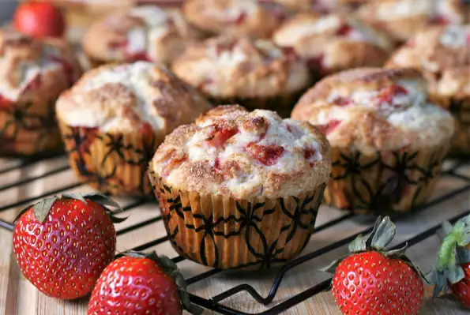

Fresh Strawberry muffins

Description
We make a version of these muffins all the time — sometimes swapping strawberries for other fruits like blueberries. The batter is straightforward — flour, baking powder, a little oil, egg, milk, and vanilla extract.
In the strawberry muffin recipe below, you’ll notice we added a few extra spices to the batter — cinnamon and finely ground black pepper. It’s not often you see black pepper in sweet baked goods, but trust us, it’s so good.
You don’t specifically taste the pepper, but it lifts the flavor of everything in the muffin. Try it. We love it.Try to use strawberries that are sweet and flavorful for these muffins. If you can’t find them, try other berries — blueberries, blackberries, raspberries, or cherries would be amazing.
Just before baking, we add a Sugary top to the muffins. It’s completely optional, but we love the tiny bit of crunch it adds once they’ve baked.
Ingredients
- ¾ cup white sugar
- ½ cup butter, softened
- 1 egg
- 2 cups all-purpose flour
- 2 teaspoons baking powder
- ½ teaspoon salt
- ½ cup milk
- ½ teaspoon vanilla extract
- 1 ½ cups chopped strawberries
- 3 teaspoons white sugar
- ½ teaspoon ground cinnamon
Steps
- Preheat the oven to 400 degrees F (200 degrees C). Grease a 12-cup muffin tin or line with paper liners.
- Beat 3/4 cup sugar and butter together in a mixing bowl using an electric mixer until creamy. Add egg and mix well.
- Sift flour, baking powder, and salt together in a small bowl. Add flour mixture and milk alternately to butter mixture until combined. Stir in vanilla extract. Gently stir in strawberries.
- Spoon batter into the prepared muffin cups. Combine 3 teaspoons sugar and cinnamon in a small bowl and sprinkle over tops of muffins.
- Bake in the preheated oven until a toothpick inserted into the center of a muffin comes out clean, 20 to 25 minutes.